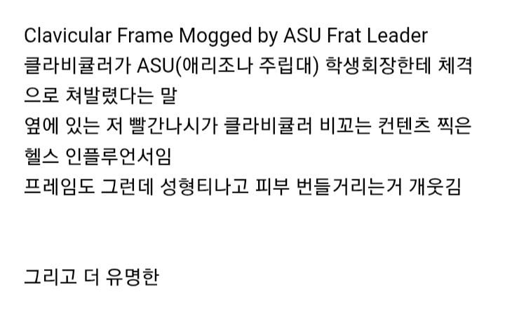
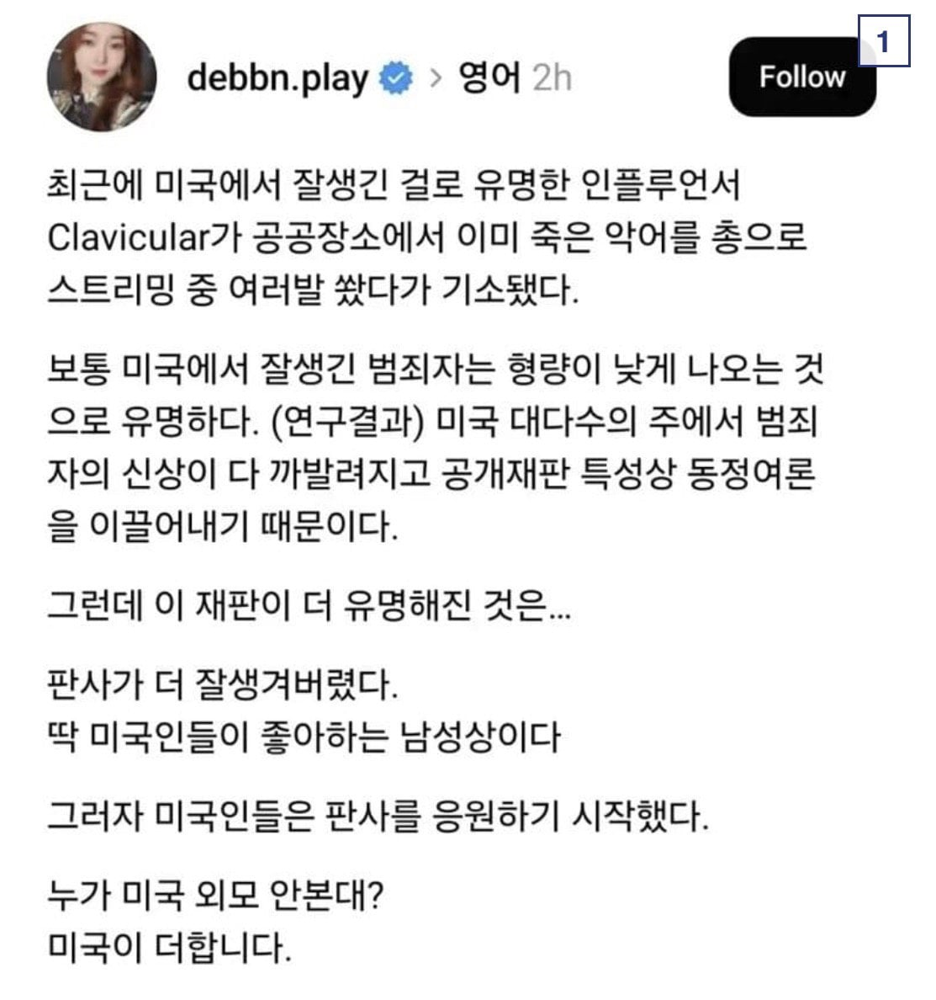

188 · 6 · 11 시간 전 · 원문


판사가 더 잘생김ㅅㅂㅋㅋ
수집 당시 댓글 6개
듀플로 · 5 시간 전
판사님 뭔데 저래 잘생겼냐
돌리고 · 4 시간 전
이거는 반칙인데
꽁치김치찌개 · 2 시간 전
판사 미쳤다.. 알프메일 그자체
분식삼대장 · 1 시간 전
반담 닮은거 같은데 ㅎㄷㄷ
나를노동에서해방해줄AI · 30 분 전
판사 무슨 영화 배우 같네
깨어있음 · 7 분 전
막짤 각선미 왜케 조아짐
판사님 뭔데 저래 잘생겼냐